Customer-story films for a shed builder — two owners, two very different buildings, and what each one made possible.
The shed is the headquarters. This is what goes on outside its doors.
Creative Focus builds large steel sheds. The hard part of advertising a shed is that the product is an empty building — it photographs as a rectangle. What actually sells it is the life that goes on inside, so the films are customer stories: the owner talks, the shed is the setting, and the end card is the only place the brand speaks for itself.
Sheds are the worst possible thing to grade. The walls are flat dark steel that swallows light, the roof is translucent in places, and the doors let in daylight that is several thousand kelvin away from the fluorescents overhead — all of which fights every skin tone in the room. The grade pulls the ceiling light back toward neutral, keeps a little of the warm spill from the door, and protects the detail in the dark cladding so the building does not read as a black hole behind the subject.
The circuit material exists to earn the interview, not to replace it: a long lens on the car mid-slide, an aerial over the track layout, and one FPV pass through the tyre smoke. Three shots, cut short, so the film stays about the building.
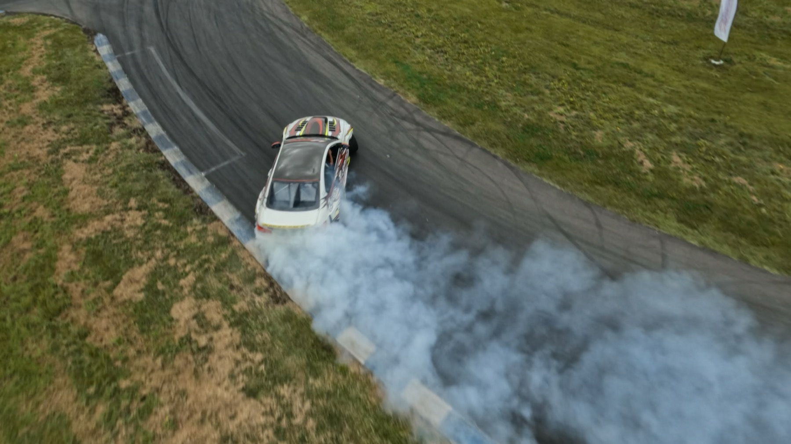
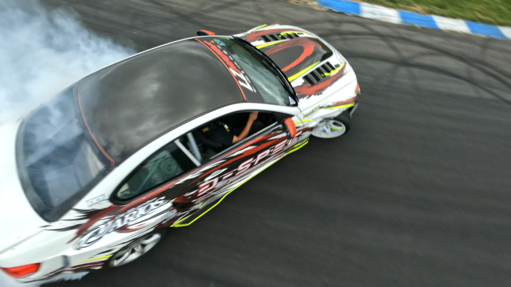
Most of the work on a job like this happens before the camera is switched on: deciding where the subject stands so that one frame carries the whole story of the business. Everything after that is coverage.
The other lesson was about whose story it is. The brief was a shed company's, but nobody is moved by a shed — so the film belongs to the customer, and the client gets the last four seconds. That restraint is what makes it work as advertising.
Five cuts from the two customer jobs — the landscape shorts, the long cut, and the vertical re-frame for social, all from the same graded 4K master. Press play on any of them.
Six frames pulled from the graded masters. Click any image to view it full screen; use the arrow keys to move through the set.
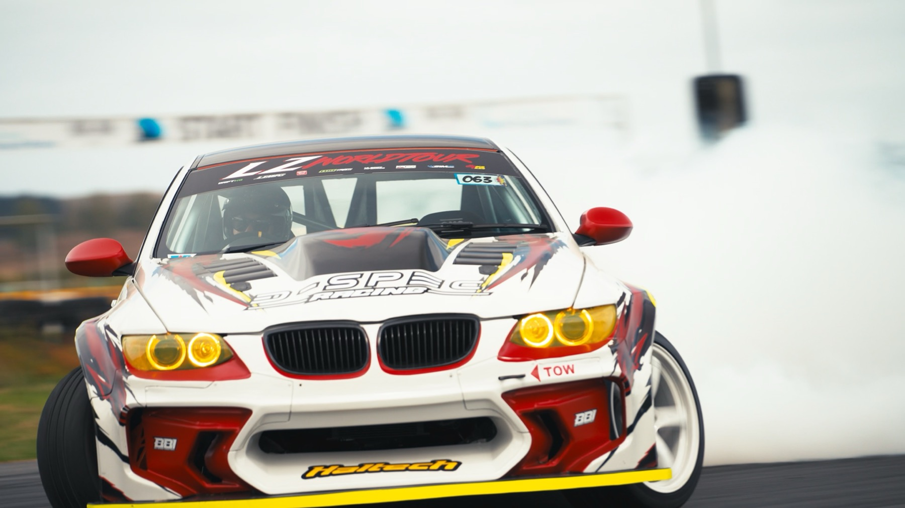
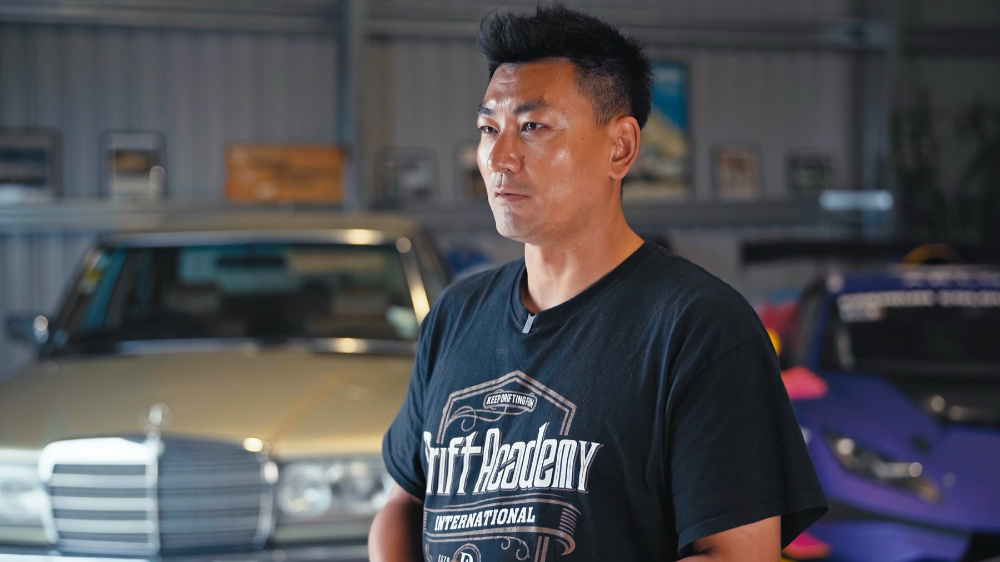
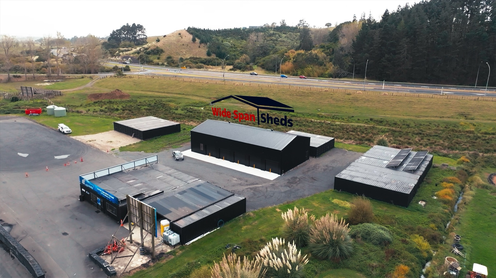
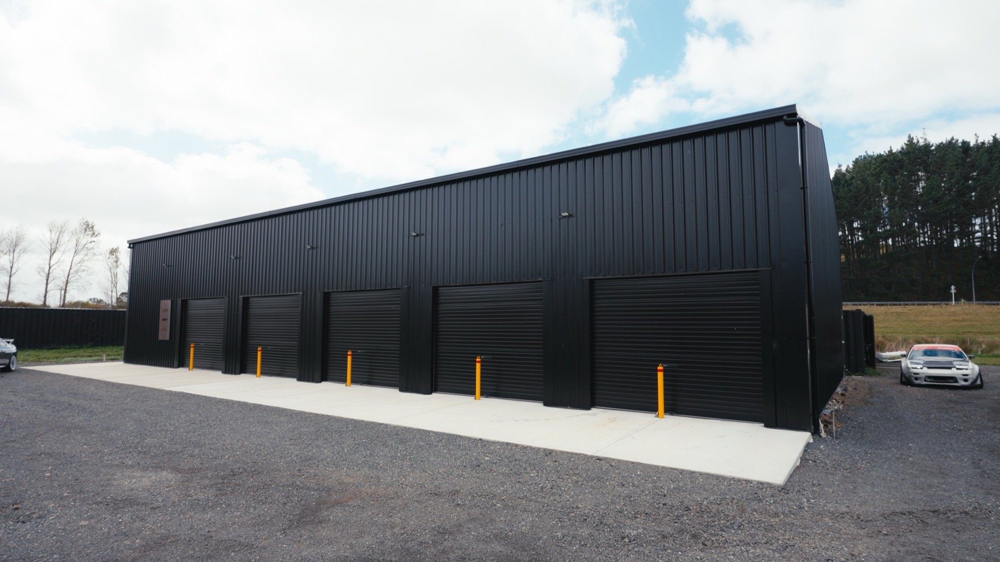
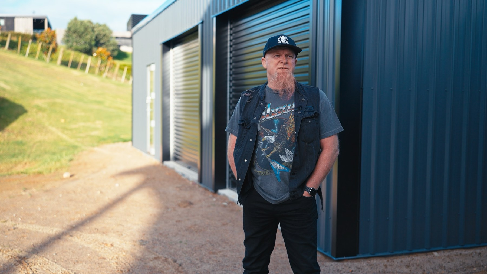
Eight stills lifted straight from the delivered films above — the same graded frames, held still. Click any image to view it full screen.
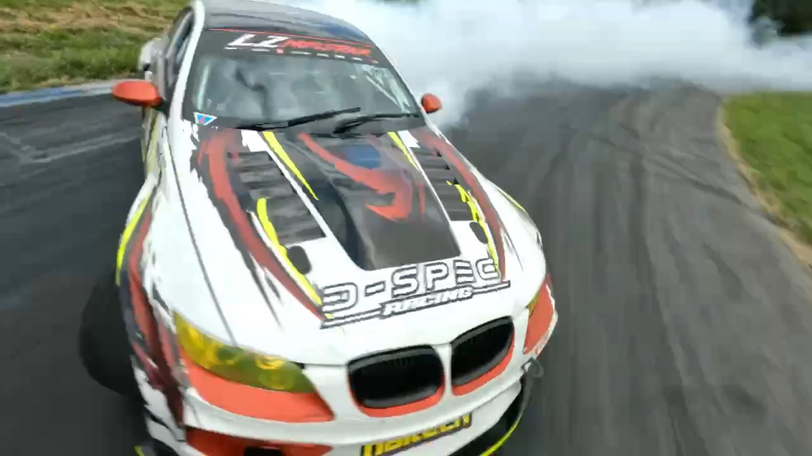
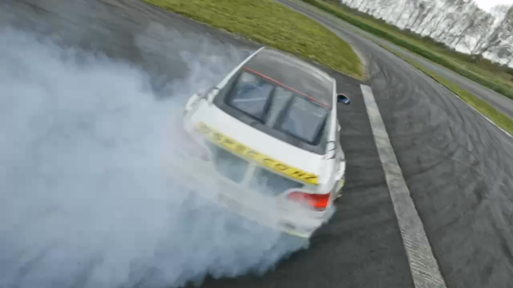
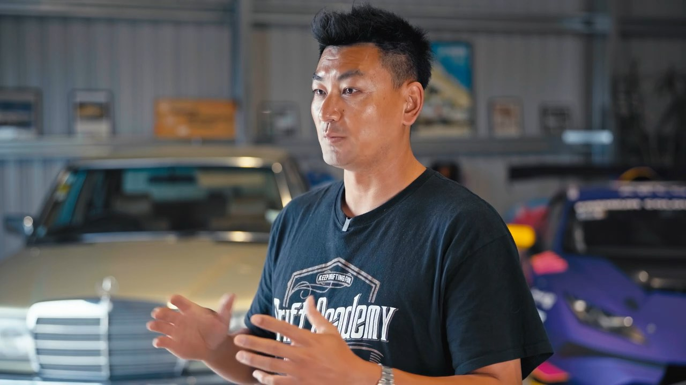
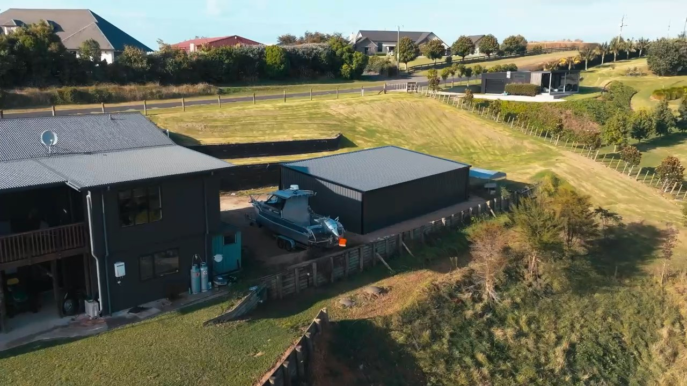
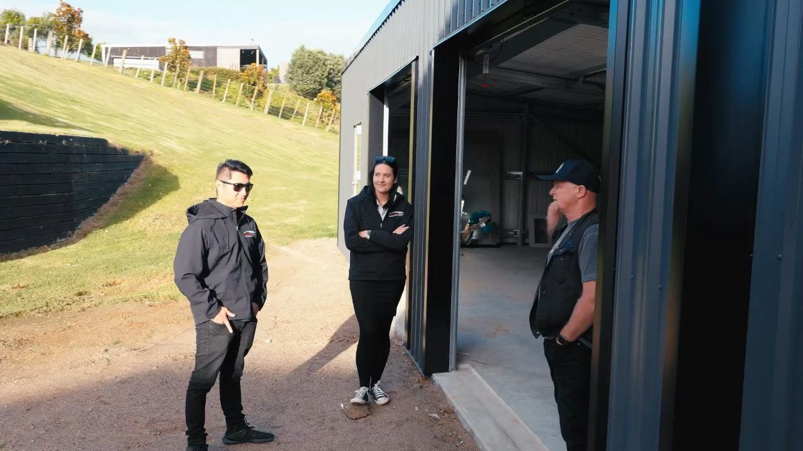
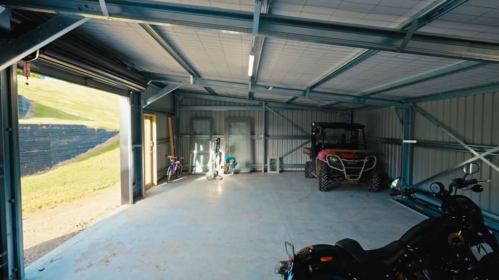
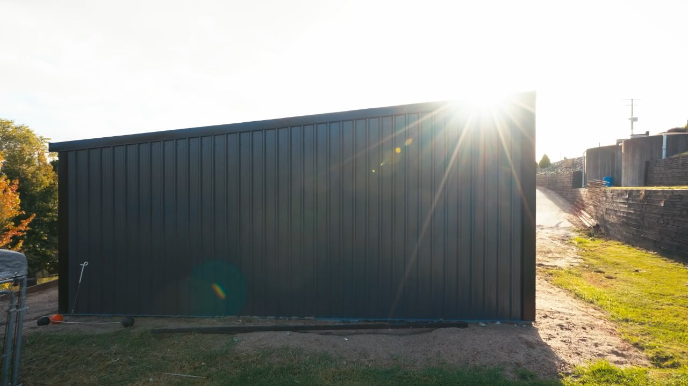
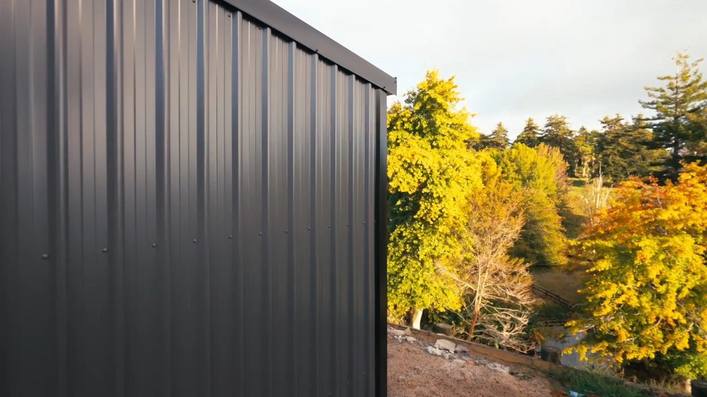
Happy to walk through the process, the outtakes, and what I'd do differently.